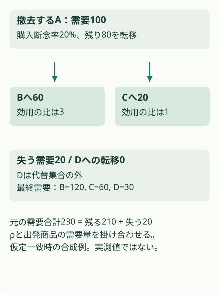
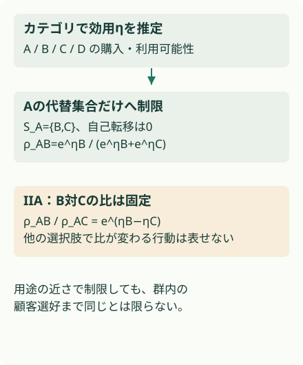

概要
Walmartは独立に作る需要予測へ、代替商品の需要流入を足すための係数を推定する。カテゴリ単位のlogitと代替候補への制限で100万超の商品規模を扱うが、検証は予測誤差の改善であり、棚変更の因果実験ではない。
問題設定
SAO（Store Assortment Optimization）は棚に何を置くかと、いくつ置くかを決める。商品Aを外したとき、Aの予測需要を全て失うとは限らない。代替品Bへ移る分があるからだ。全ての品揃えについて個別に予測すると組合せ数が膨らむため、独立需要と転移係数を分ける。
独立予測と棚の意思決定の間にDTを置く
予測と関係
商品ごとの需要量を入力する。
カテゴリ効用と代替集合から転移係数を作る。
意思決定
撤去候補から残る商品への流入を加える。
棚容量などの制約の下で品目と数量を選ぶ。実装はtoy対象外。
核心
著者の主張 · 論文に書かれていること
著者は需要転移係数を明示的に算出するRestricted Logitを提案する。全品揃えの組合せごとに予測する代わりに、カテゴリ別の効用と商品間の代替集合を推定し、独立予測へ補正を加える。
解釈・批評 · 読書メモ
既存の予測器と棚最適化器の間に、商品同士の依存を入れる部品として読める。ただし売上データから真の代替行動は直接見えない。予測誤差の低下は有用な傍証だが、撤去時の需要転移係数の正しさや、最適化した棚の売上効果をそのまま証明しない。
モデル / 手法
転移係数は出発商品から到着商品への割合
ρᵢⱼは商品iがなく、他の商品が利用可能なとき、iの需要がjへ移る確率を表す。自己転移はゼロ。代替関係は対称でも転移量は対称とは限らない。出発点の需要量、他の候補、購入断念率が違うためだ。
代替集合Sᵢは購買履歴や商品属性から作る。Store Yule’s Q、顧客とbasketのodds ratio、オンライン行動、低販売・新商品の属性などを使い分ける。併買が多いだけなら補完財の可能性があり、顧客単位とbasket単位の関係を区別する。本文では高い代替性をscore>0.6で制限する（§III、§IV）。
カテゴリで効用を学び、代替集合だけで正規化する
利用可能集合Oでの購入確率は P(j|O)=exp(ηⱼ)/Σ_{k∈O}exp(η_k)。店舗・商品・週の購入件数Zと、棚割計画と欠品記録の積集合から作る利用可能性Wを使う。カテゴリ別に L(η)=ΣⱼKⱼηⱼ−Σₜmₜ log Σ_{i∈Sₜ}exp(ηᵢ) を最大化する。Kは総購入件数、mは週の購入総数で、minorization–maximization法を用いる。NumPyで実装し、カテゴリ間をSparkで並列化する（§IV）。
推論では ρ̂ᵢⱼ=exp(η̂ⱼ)/Σ_{k∈Sᵢ,k≠i}exp(η̂_k) として、代替集合の外をゼロにする（式11–13）。購入断念率ℓᵢは別の業務ルールで推定し、商品への最終転移割合を (1−ℓᵢ)ρ̂ᵢⱼ にする。toyもこの二段階を区別する。
IIAとneed stateの仮定が、再利用を可能にする
IIAはjとkの選択確率比が他の選択肢に依存しない仮定で、logitでは P(j)/P(k)=exp(ηⱼ−η_k) となる。カテゴリで推定した効用を狭い代替集合へ再利用できる理由だ。さらに購入断念と商品間switchingの独立性、初期の希望商品が同じneed stateなら切替先の分布も同じ、という仮定を置く。need stateは「顧客が満たしたい用途」を指す。
単一撤去なら残る商品jの補正は D̃ⱼ=D̂ⱼ+(1−ℓᵢ)ρ̂ᵢⱼD̂ᵢ。複数の商品が同時に欠ける場合には、既に撤去した商品へ需要を流さない処理が必要で、この一段式を無条件に繰り返してはならない。
係数を需要量に変換して読む
{kind=link}

計算を軽くする仮定が、表せる行動も制限する
{kind=link}

なぜ効きそうか
解釈・推論
既存の予測器を全品揃えに合わせて作り直さず、代替候補に限った係数で相互作用を加えられる。集合が重なっていてもカテゴリの効用を再利用できるのが計算上の利点だ。ただし代替集合が誤っていたり、特定ブランドの購入者だけ切替先が違ったりすると、制限して正規化する段階で誤差が入る。
根拠
WMAPEの改善は、係数の間接検証にとどまる
著者は1年の取引データで訓練し、最後の2か月をテストとして50カテゴリの代表店舗をbacktestする。表IIのWMAPEは以下の通り。比率なので0.28→0.21は7ポイントの減少である。
| 店舗 | 独立予測 | DT補正 | 差 |
|---|---|---|---|
| A | 0.28 | 0.21 | −0.07 |
| B | 0.16 | 0.10 | −0.06 |
| C | 0.02 | 0.03 | +0.01 |
| D | 0.16 | 0.08 | −0.08 |
| E | 0.18 | 0.07 | −0.11 |
一部は悪化している。WMAPEは非負需要なら Σ|予測−実績|/Σ実績 と読めるが、店舗ごとの件数・信頼区間・全カテゴリの重み付き集約値は表から確定できない。
100万超という記述は扱う商品universeの規模であり、同じ棚に100万商品を置く意味ではない。大規模運用の計算時間・メモリの比較表はなく、scaling曲線の再現もできない。本文は顧客の実際の切替を観測できないため、予測改善をproxy validationに使うと明記する（§V–VI）。
実行可能な理解
A/B/C/Dの4商品を用意し、Aの需要100のうち20%は購入断念、残りは効用比3:1のB/Cへ流す。独立予測[100,60,40,30]からAを撤去すると、補正需要は[0,120,60,30]、失われる需要は20となる。Dは代替集合外で変わらない。
効用は推定せず明示的に与える。仮定と同じ過程を真値にした場合に加え、群内の好みが変わってB/Cへの流れが逆方向になる例も比較する。toyのWMAPEは論文表IIの再現ではない。
このLabは run.py 単体で実行できます。結果はコードと同じフォルダーに保存されます。
結果
4商品の手計算可能な設定。効用は既知で推定しない。仮定一致時の誤差ゼロは構成上の結果であり、観測データへの精度保証ではない。
商品A撤去後の需要補正
| 指標 | independent_WMAPE | DT_WMAPE |
|---|---|---|
| assumption_matched | 0.380952 | 0.0 |
| within_set_preference_shift | 0.380952 | 0.380952 |
生の results.json
{
"note": "4商品の手計算可能な設定。効用は既知で推定しない。仮定一致時の誤差ゼロは構成上の結果であり、観測データへの精度保証ではない。",
"demand": [
100,
60,
40,
30
],
"coefficients": [
[
0.0,
0.6000000000000001,
0.2,
0.0
],
[
0.6,
0.0,
0.15,
0.0
],
[
0.5142857142857143,
0.3857142857142858,
0.0,
0.0
],
[
0.0,
0.0,
0.0,
0.0
]
],
"removed_item": 0,
"independent": [
0,
60,
40,
30
],
"adjusted": [
0,
120.0,
60.0,
30.0
],
"lost_demand": 19.999999999999996,
"counterexample_actual": [
0,
80,
100,
30
],
"experiments": [
{
"name": "商品A撤去後の需要補正",
"metrics": {
"assumption_matched": {
"independent_WMAPE": 0.380952,
"DT_WMAPE": 0.0
},
"within_set_preference_shift": {
"independent_WMAPE": 0.380952,
"DT_WMAPE": 0.380952
}
}
}
],
"verification": {
"mechanism": "PARTIAL",
"performance": "NOT TESTED",
"scaling": "NOT TESTED",
"production_applicability": "NOT TESTED"
}
}仮定一致の真値では、独立予測のWMAPEは0.381、DT補正は0。群内の好みを変えた対照では両方0.381となり、補正の利点が消える。ゼロ誤差は既知の生成規則を使ったためで、推定器の精度を示す結果ではない。
検証できたこと
需要の保存（残存需要＋購入断念＝撤去前需要）、集合外への転移ゼロ、購入断念後の正規化を確認した。群内選好がずれる対照例では補正誤差が残る。推定済み係数をどう使うかの理解はPARTIAL。
検証していないこと
効用推定、代替scoreの学習、欠品の内生性、同時撤去、100万商品での計算量は未検証。仮定一致時のtoy誤差ゼロは生成規則を知っているためで、予測性能の証拠ではない。実運用では代替集合の妥当性と欠品・販促・棚位置の影響を分け、棚変更を実験で評価する必要がある。
実装
リポジトリのルートで uv run papers/walmart-demand-transfer/run.py を実行する。Python標準ライブラリだけを使い、CPUで完了する。結果は同じディレクトリの results.json に保存する。
乱数を使う実験はseedを固定した。数値は論文の測定値と別に集計している。
原論文・公式コード対応
| 論文 | このLab | 省略・公式コード |
|---|---|---|
| 式11–13 | coefficients |
効用は既知、MM推定を省略 |
| §IV 購入断念 | loyalty |
業務ルールの推定は省略 |
| 式3、§V 予測補正 | remove_one |
単一撤去のみ |
| §V WMAPE | experiment |
合成真値。公式repo URLは本文から確認できず |
一次資料は arXiv v1 PDF。公式実装の実行は行っていない。